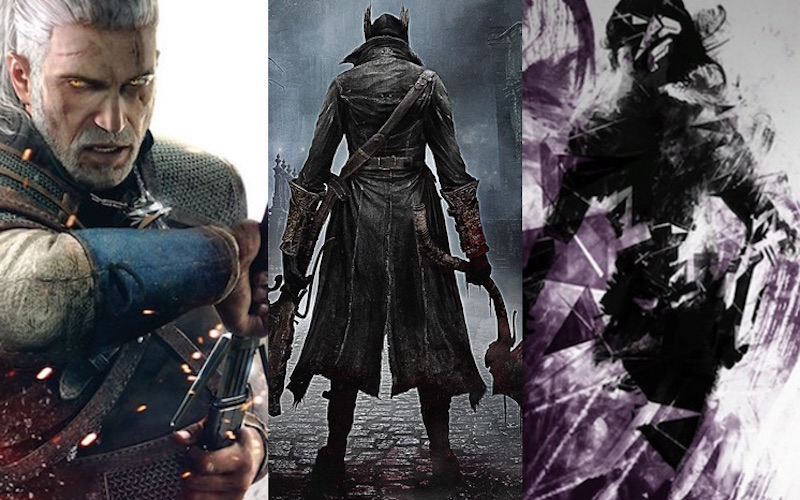
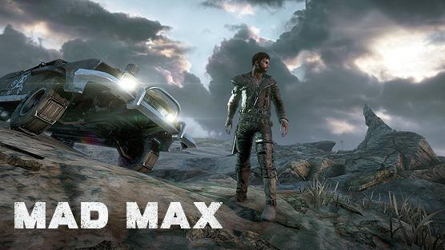
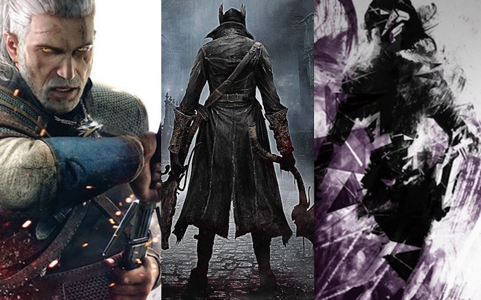
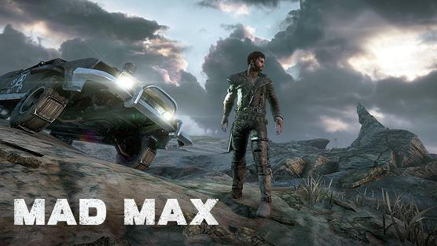

My hobbie is PC games, and I want to tell you some facts about it:
- PC games, also known as computer games or personal computer games, are video games played on a personal computer rather than a dedicated video game console or arcade machine. Their defining characteristics include a lack of any centralized controlling authority, a greater degree of user control over the video-gaming hardware and software used and a generally greater capacity in input, processing, and output.
- Home computer games became popular following the video game crash of 1983, particularly in Europe, leading to the era of the "bedroom coder". From the mid-90s onwards, PC games lost mass-market traction to console games before enjoying a resurgence in the mid-2000s through digital distribution.The uncoordinated nature of the PC game market and its lack of physical media make precisely assessing its size difficult.
The best PC games of 2015:
| Title / Platform | Publisher | Genre | Metascore | |
|---|---|---|---|---|
| 1 | Grand Theft Auto V PC | Rockstar Games | Action-Adv. | 96 |
| 2 | Metal Gear Solid V: The Phantom Pain XB1 | Konami | Action-Adv. | 95 |
| 3 | The Witcher 3: Wild Hunt PC | Warner Bros. | Action-RPG | 93 |
| 4 | Metal Gear Solid V: The Phantom Pain PS4 | Konami | Action-Adv. | 93 |
| 5 | Undertale PC | tobyfox | RPG | 93 |
| 6 | Journey PS4 | Sony | Adventure | 92 |
| 7 | Bloodborne PS4 | Sony | Action-RPG | 92 |
| 8 | The Witcher 3: Wild Hunt PS4 | Warner Bros. | Action-RPG | 92 |
| 9 | The Witcher 3: Wild Hunt XB1 | Warner Bros. | Action-RPG | 91 |
| 10 | Metal Gear Solid V: The Phantom Pain PC | Konami | Action-Adv. | 91 |
| 11 | Shovel Knight PS4 | Yacht Club | Platform | 90 |
| 12 | Mario Kart 8 DLC Pack 2 Wii U | Nintendo | Racing | 90 |
| 13 | The Binding of Isaac: Afterbirth PC | Nicalis | Action-Adv. | 90 |
| 14 | The Witcher 3: Wild Hunt - Hearts of Stone PS4 | Warner Bros. | Action-RPG | 90 |
Screenshots
 


